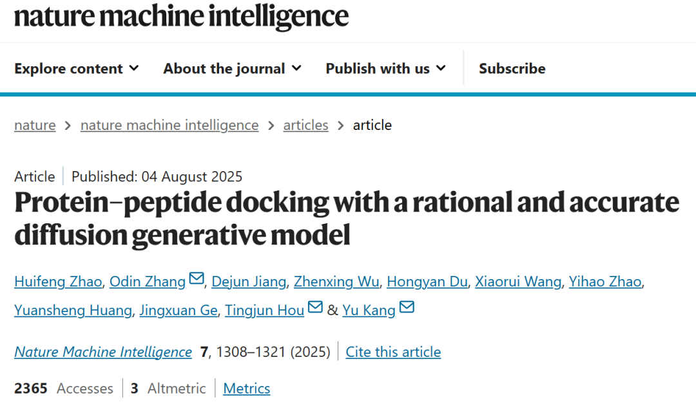
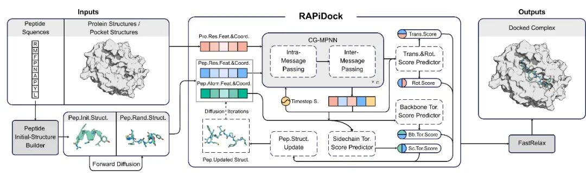
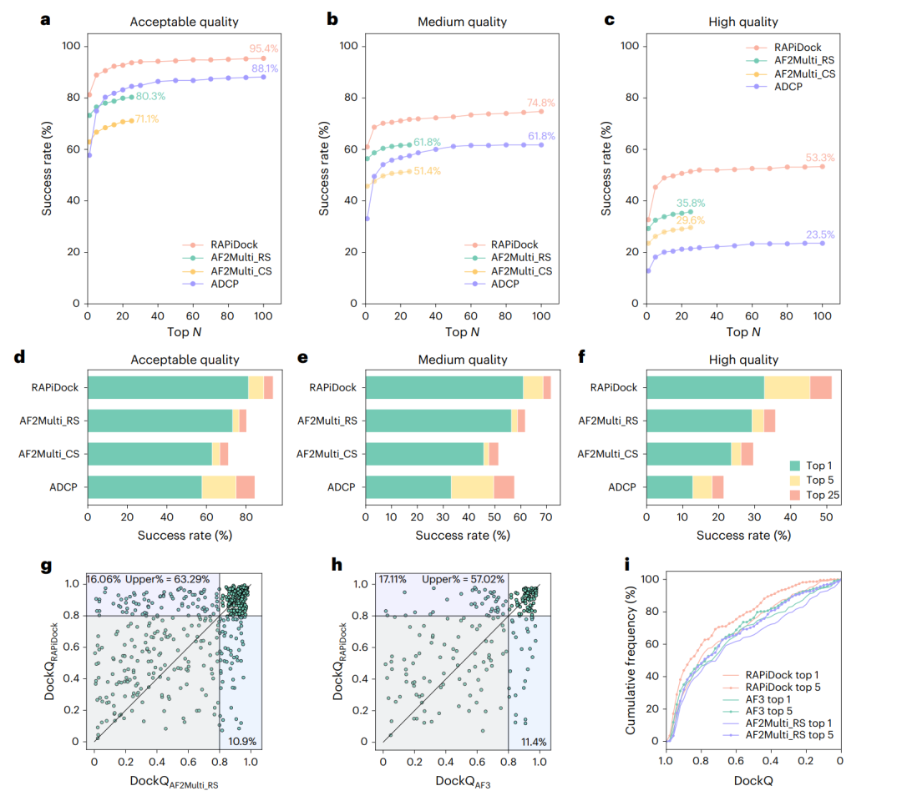
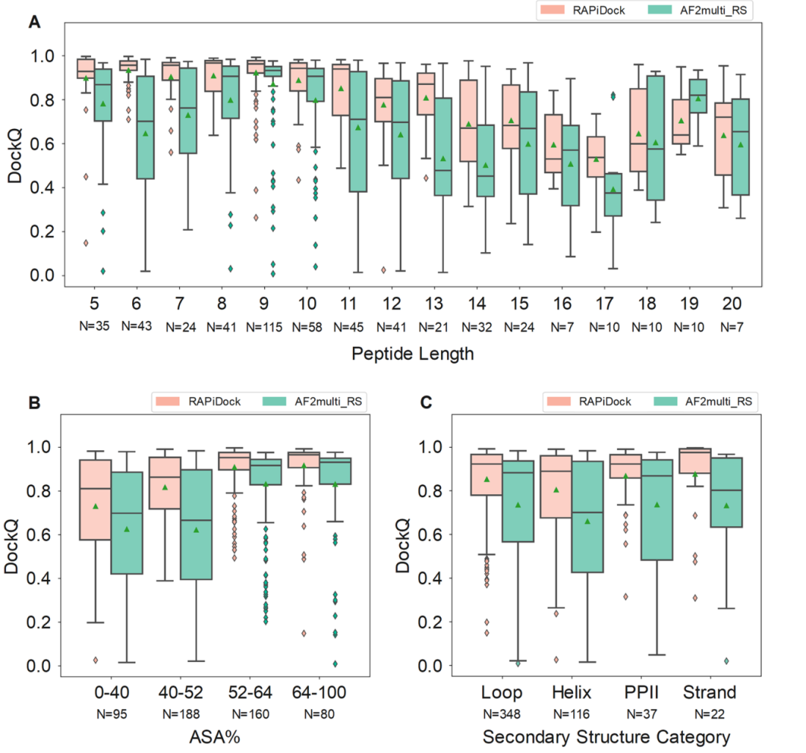
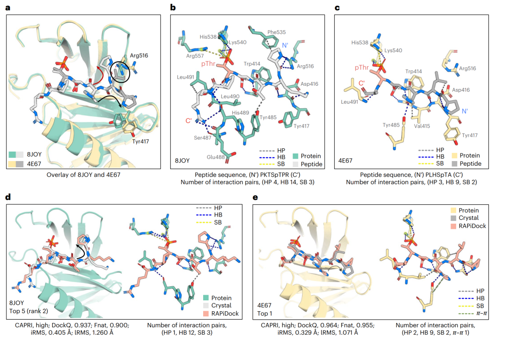
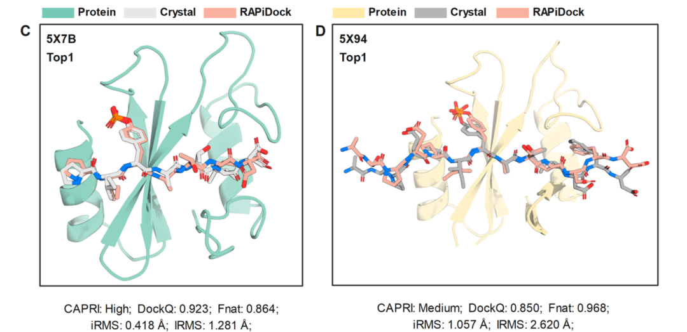
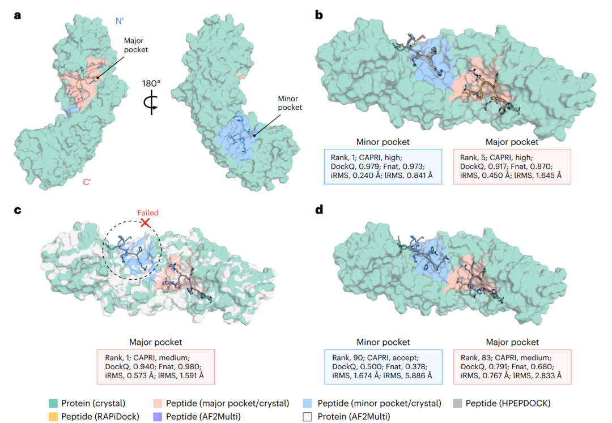
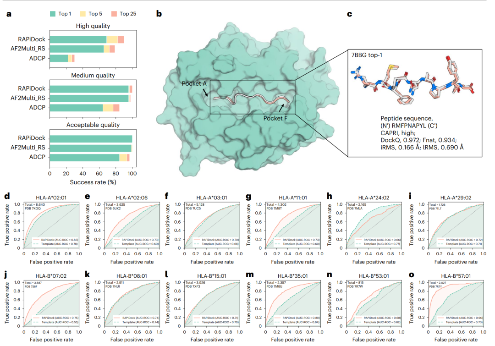
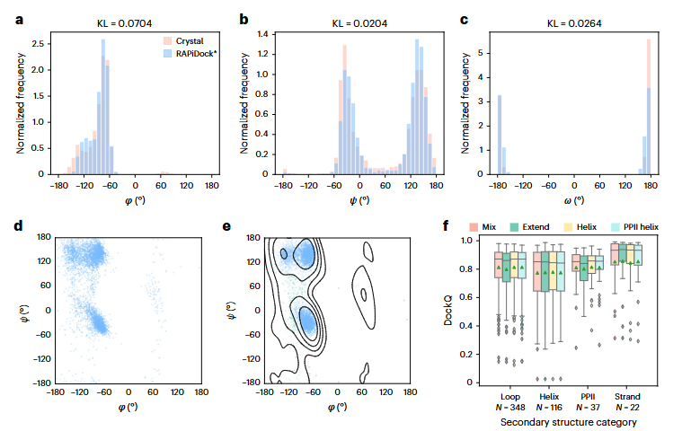

今天我们要介绍的是发表在《Nature Machine Intelligence》上的一项突破性研究——《Protein–peptide docking with a rational and accurate diffusion generative model》。该研究提出了一种名为RAPiDock的新型扩散生成模型，专门用于蛋白质与短肽（通常不超过20个氨基酸）的分子对接预测。简单来说，RAPiDock能够高效、精准地模拟蛋白质与肽的结合模式，对于药物研发、癌症治疗等领域具有重要的实用价值。
RAPiDock的创新之处究竟在哪里？与此前的主流方法相比，传统手段往往在速度与精度之间难以兼顾：有的计算效率低下，有的在复杂场景下准确率有限。而RAPiDock通过将物理先验约束与等变神经网络架构相结合，在保持极高精度的同时实现了毫秒级推理速度。在标准测试集 RefPepDB-RecentSet 上，RAPiDock 在 Top-25 命中率达到93.7%，相比 AlphaFold2-Multimer 提升13.4%；更令人印象深刻的是，其单次对接仅需0.35秒，比 AlphaFold2-Multimer 快了近270倍。这项技术不仅为蛋白质-肽对接研究设立了新的性能标杆，也为大通量药物筛选提供了切实可行的计算工具。

🔬 蛋白质-肽对接的挑战与难点
蛋白质-肽相互作用（PPI）广泛存在于细胞过程中，约占所有蛋白互作的40%，并在癌症发生、药物递送等关键生物机制中扮演重要角色。然而，肽类分子通常表现出较弱的结合亲和力、瞬态的结合模式以及高度的构象依赖性，这为实验方法（如X射线晶体学）带来了巨大挑战。RCSB PDB数据库的统计显示，蛋白质-肽复合物结构仅占总数的5.1%，远低于蛋白质-蛋白质（49.4%）和蛋白质-小分子复合物（19.6%）。
传统计算方法（如ADCP）受限于构象搜索算法和评分函数的精度，难以处理肽的高度灵活性，易出现构象空间爆炸问题。而基于深度学习的AlphaFold2-Multimer（AF2Multi）虽在精度上有显著提升，但其依赖多序列比对、推理速度慢，且对构象柔性的建模仍存在不足，因此难以适用于大规模虚拟筛选场景。
🌟 RAPiDock的核心创新：理性设计、高精度与高效率的统一
RAPiDock是一种全原子级别的扩散生成模型，通过系统建模平移、旋转以及主链和侧链扭转角等自由度，逐步将随机初始结构去噪生成高置信度的结合构象。其关键技术组成包括：
肽初始结构构建器：基于PeptideBuilder库生成具有标准键长/键角的肽结构，支持92种α-氨基酸（包括磷酸化等多种翻译后修饰类型）。该模块借助核密度估计（KDE）从晶体学数据中提取几何先验，确保初始构象的真实性（优化后r.m.s.d. ≤ 0.5 Å）。
双尺度图表示：肽分子采用残基级图处理全局运动（平移与旋转），原子级图优化局部扭转角；蛋白质则使用残基图进行表示，在计算效率与结构细节之间实现平衡。
等变网络架构：基于Clebsch-Gordan（CG）张量积构建SE(3)-等变消息传递机制，确保模型输出具有旋转-平移不变性。该架构共同预测平移（t）、旋转（r）、主链扭转角（τ_b）和侧链扭转角（τ_s）。
几何扩散过程：在对接自由度上施加扩散噪声（采用高斯分布、热核分布与包裹正态分布），通过逐步去噪生成能量合理的复合物结构。该方法显著压缩采样空间，并保证二面角分布与真实晶体数据高度一致（KL散度 < 0.1，符合Ramachandran图统计）。
训练与优化策略：使用差分进化算法进行构象匹配，训练数据来自RefPepDB（8,846个复合物结构）。最终输出经PyRosetta的FastRelax进行能量优化，进一步提升结构的物理合理性。

RAPiDock 在蛋白质-肽对接任务中展现出卓越的综合性能，在准确性与速度两方面均显著优于现有基准模型。实验基于以下两个数据集展开：
RefPepDB-RecentSet：包含523个近期解析的蛋白质-肽复合物，用于测试局部对接性能；
PepSet：包含185个未结合蛋白结构，用于测试局部与全局对接能力。
评价指标主要包括：
CAPRI-peptide标准：从接受质量、中等质量到高质量（依据 Fnat、iRMS、lRMS 等指标综合判定）；
DockQ 评分：>0.8 视为高质量对接；
推理速度：每个复合物平均耗时0.35秒，较 AlphaFold2-Multimer（AF2Multi）快约270倍。
接受质量：Top-1 成功率达81.3%，Top-25 达93.7%，较 AF2Multi_RS 提升13.4%（P=9.68×10⁻¹¹）；
中等质量：Top-1/Top-5/Top-25 分别达到61.0%、68.6%、71.7%，优于 AF2Multi_RS 和 ADCP；
高质量：Top-100 达53.3%，较 AF2Multi_RS 提升17.5%（P=1.38×10⁻⁸），较 ADCP 高29.8%（P=2.53×10⁻²³）；
DockQ > 0.8 比例：在 Top-1/Top-5/Top-25 中分别达到63.29%、70.94%、72.85%，显著高于 AF2Multi_RS。
在避免训练重叠的子集 RefPepDB-RecentSet4AF3（228个复合物）中：
Top-1 中57.02%的复合物上 RAPiDock 的 DockQ 高于 AF3；
Top-5 中61.84%胜出，且有20.61%的案例中 RAPiDock > 0.8 而 AF3 < 0.8；
在低相似度（序列/结构 < 80%）样本中，RAPiDock 接受质量达94.74%，远高于 AF3 的57.89%；
累计频率曲线一致表明 RAPiDock 整体性能优于 AF3。
局部对接：RAPiDock_local 在接受质量下 Top-1/Top-5/Top-25 达到58.9%/75.7%/82.2%，显著优于 ADCP；
全局对接：RAPiDock_global 表现虽略低于局部模式，但仍大幅领先于 HPEPDOCK。
平均每复合物仅需0.35秒，较 AF2Multi（约95秒）提速约270倍，非常适用于大规模高通量筛选场景。

🧪鲁棒性分析：广泛场景下的稳定表现
RAPiDock不仅在准确性上表现优异，更在不同挑战性场景中展现出卓越的稳定性，具体体现在以下几个方面：
肽长度适应性：传统工具如ADCP的性能随肽链长度增加而显著下降，而RAPiDock在不同肽长下均能保持DockQ > 0.8的高质量对接水平。
结合口袋深度鲁棒性：在浅结合口袋（ASA% < 52%）条件下，AF2Multi_RS性能出现明显下降，而RAPiDock仍能稳定维持DockQ > 0.8）。
二级结构兼容性：对于延伸构象、α-螺旋、PPII等多种二级结构类型，RAPiDock均表现稳定，平均DockQ维持在0.9以上。
翻译后修饰（PTM）支持：RAPiDock能够直接处理包括磷酸化在内的92种常见翻译后修饰，而AF2Multi与ADCP等方法需要依赖额外的突变预处理步骤。

🧪真实案例验证：精准捕捉复杂结构细节
RAPiDock在多个具有挑战性的真实案例中展现出优异的结构预测能力，以下为典型示例：
案例1：PLK1-PBD（癌症治疗相关靶点）
背景：PLK1的Polo-box结构域（PBD）具有浅结合口袋，是肽类药物开发的理想靶点。测试基于PDB 8JOY和4E67两个结构，其关键侧链（Arg516、Tyr417）取向差异显著，直接影响结合肽的构象。
结果：
对于8JOY结构，RAPiDock排名第二的构象达到高质量对接（DockQ=0.937，Fnat=0.900，iRMS=0.405Å，lRMS=1.260Å），准确复现了肽段N末端的卷曲构象；
对于4E67结构，Top-1构象即达到高质量（DockQ=0.964，Fnat=0.955，iRMS=0.329Å，lRMS=1.071Å），成功捕捉延伸构象及关键π-π堆叠相互作用；
方法成功识别出磷酸化苏氨酸的锚定作用及结合诱导的侧链重排，表现优于AF2Multi_RS。

案例2：SHP2 SH2结构域
背景：SHP2蛋白的SH2结构依赖磷酸酪氨酸进行信号转导，分别测试其N-SH2（PDB 5X7B）和C-SH2（PDB 5X94）结构域；
结果：RAPiDock的Top-1构象分别达到高质量和中等质量，精准还原了关键盐桥网络；相比之下，AF2Multi_RS错误预测了BG环的构象，而ADCP则未能实现有效对接。

案例3：Importin-α多结合口袋识别
背景：Importin-α蛋白存在主要和次要两个结合口袋，对对接算法提出较高挑战；
结果：RAPiDock_global的Top-1构象精准命中次要口袋（DockQ=0.979，高质量），Top-5构象成功识别主口袋（DockQ=0.917，高质量）；而HPEPDOCK仅在第83和90排名才实现类似定位。

案例4：pHLA体系虚拟筛选应用
背景：人白细胞抗原（HLA）-肽复合物是免疫治疗的重要靶点，对接准确性直接影响候选肽的筛选效能；
结果：在6种HLA亚型（包括7MJA等）测试中，RAPiDock的平均AUC-ROC达到0.75，显著优于传统模板方法（性能范围0.60-0.77），展现出优秀的虚拟筛选潜力。

RAPiDock所生成的肽结构在关键二面角（φ, ψ, ω）分布上与实验晶体结构高度一致（KL散度<0.1）。Ramachandran图分析显示，预测构象集中分布于左上象限（φ: -160°~+180°, ψ: -50°~+90°）及左下象限（φ: -120°~0°, ψ: -50°~-70°），与天然肽构象偏好完全吻合。经PyRosetta FastRelax能量优化后，预测结构更接近真实晶体构象，其结构真实性显著优于AF2Multi_RS及ADCP等方法。

应用前景：RAPiDock可广泛用于高通量虚拟筛选、翻译后修饰（PTM）相关相互作用预测，以及复杂多结合口袋的识别任务，显著加速癌症靶向治疗和免疫疗法领域的药物研发进程。
当前局限：模型在处理某些稀有修饰氨基酸时精度仍有提升空间，且扩散过程的迭代采样相对计算密集。未来可通过扩展训练数据集、优化扩散轨迹生成策略等方式进一步提高其性能与效率。
RAPiDock在蛋白质-肽对接任务中取得了突破性进展，以93.7%的Top-25成功率和仅0.35秒每复合体的极高推理速度，显著超越传统对接工具及现有深度学习方法。无论是精细侧链取向的调整，还是复杂多口袋结合模式的识别，RAPiDock都表现出优秀的建模能力。
如希望进一步了解模型细节或尝试使用，可访问代码仓库（GitHub: huifengzhao/RAPiDock）或阅读原论文。